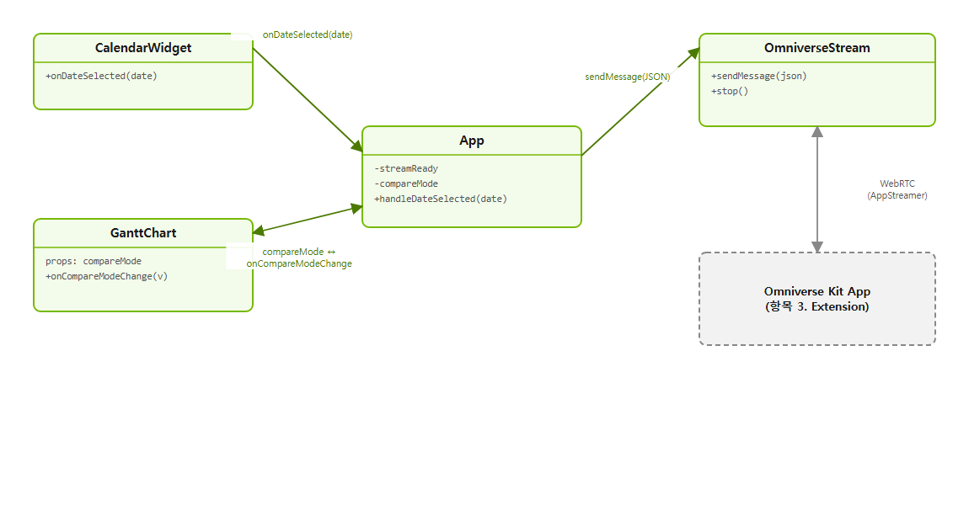
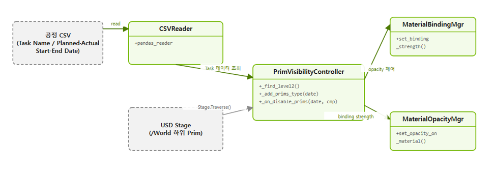
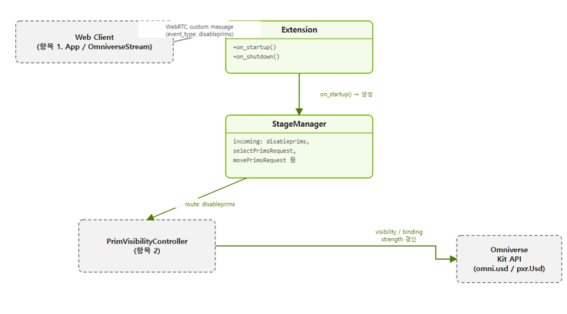

1
Web–Omniverse 실시간 스트리밍 시스템 구축
개발 의도. 건설 현장의 4D(3D 모델 + 공정 일정) BIM 데이터를 현장 관계자가 별도 클라이언트 설치 없이 웹 브라우저에서 실시간으로 확인하고, 계획 대비 실제 공정 진행 현황을 한눈에 비교할 수 있는 프로덕션급 웹 뷰어를 개발했습니다. 본인은 Omniverse Kit 앱과의 WebRTC 연결 및 커스텀 메시지 프로토콜 등 스트리밍·메시징 로직을 담당했습니다.
- NVIDIA Omniverse WebRTC Streaming Library(AppStreamer)를 이용해 Local 방식(사내망 IP·시그널링 포트)으로 React 웹 클라이언트를 Omniverse Kit 앱에 직접 연결하는 스트리밍 컴포넌트와 메시지 프로토콜 구현
- 1920×1080 @ 60FPS 스트리밍, 최대 재연결 20회, 인증(authenticate) 활성화
- 상단 Header · 중앙 3D 스트리밍 뷰(OmniverseStream) · 하단 공정관리 영역(GanttChart + CalendarWidget)으로 구성된 대시보드형 레이아웃
- 공정 실적(Actual) / 계획(Planned) / 병합(Merged) 세 가지 보기 모드와 Compare(비교) 토글을 지원하는 간트 차트 (238개 공정 태스크, 2·3차 계층)
Class Diagram

CalendarWidget에서 날짜를 선택하면
App.handleDateSelected가 { event_type: "disableprims", payload: { date, compare } } 형태의 JSON 메시지를 만들어
OmniverseStream.sendMessage(= AppStreamer.sendMessage)로 Kit 서버에 전달합니다. 본인은 OmniverseStream의 WebRTC 연결·상태 관리 및 App의 메시지 조립·전송 로직을 구현했으며,
GanttChart/CalendarWidget/Header 등 UI 컴포넌트의 디자인·레이아웃은 팀 내 다른 프로그래머가 구현했습니다.
2
OpenUSD 기반 데이터 파이프라인 개발
개발 의도. 공정관리 시스템에서 산출되는 CSV 형태의 공정 실적/계획 데이터(태스크명, 계획·실제 시작/종료일, 진행률 등)를 USD Stage 내 3D 구조물 Prim과 매칭시켜, 임의의 날짜를 기준으로 "그 시점까지 실제/계획대로 시공된 구조물"을 3D로 표현하는 4D BIM 데이터 파이프라인이 필요했습니다.
- CSVReader가 pandas로 공정 CSV를 로드해 Planned/Actual Start·End Date 컬럼을 datetime으로 파싱
- PrimVisibilityController가 USD Stage를
/World하위 Level1→Level2까지 순회(Traverse)하며 Prim을 수집 - Prim 경로에서 정규식으로 Task ID를 추출해 CSV의 Task Name과
pandas merge로 매칭 - 선택된 날짜가 각 태스크의 계획/실제 구간에 포함되는지 판정해 Prim에 Planned / Actual / NotExist 타입을 부여
Class Diagram

_add_prims_type()에서 각 태스크의 계획/실제 시작·종료일과 선택된 날짜를 비교해 Planned/Actual/완료 여부를 판정하고, Prim 이름 기반 정규식 매칭으로 CSV 로우와 USD Prim을 1:1로 연결합니다.
결과로 만들어진 Actual/Planned/NotExist Prim 리스트는 Sdf.ChangeBlock과 2,000개 단위 비동기 배치 처리(apply_visibility_and_strength_async)로 갱신되어,
다수의 Prim이 존재하는 대규모 건설 씬에서도 끊김 없이 4D 시뮬레이션이 동작하도록 구현했습니다.
3
Omniverse 확장 프로그램(Extension) 개발 및 환경 구축
개발 의도. 웹 클라이언트가 보낸 날짜/비교모드 메시지를 Kit 앱 내부에서 실제로 처리해 3D 씬에 반영할 Extension이 필요했습니다.
NVIDIA kit-app-template의 usd_viewer.messaging 템플릿을 베이스로 자체 4D BIM 시각화 로직을 확장 구현했습니다.
- Extension(
omni.ext.IExt)이 시작 시 LoadingManager/StageManager를 생성하고, StageManager가 carb 메시지버스에 커스텀 이벤트 핸들러를 등록해 웹 클라이언트 요청을 라우팅 - StageManager가
getChildrenRequest,selectPrimsRequest,makePrimsPickable,resetStage,movePrimsRequest,disableprims등 인커밍 이벤트를 각각의 핸들러로 등록 disableprims이벤트 수신 시 PrimVisibilityController(2번 항목)를 호출해 해당 날짜 기준으로 3D 씬을 갱신- 카메라 이동/비행 속도 조정, Prim 선택·피킹 제어, 카메라 리셋 등 부가 상호작용 이벤트도 함께 처리
Class Diagram

StageManager._on_disable_prims가 이벤트 payload의 date/compare를 꺼내 PrimVisibilityController에 전달하면, Actual 구간 Prim은 항상 표시되고
Planned 구간 Prim은 Compare 모드에 따라 표시/숨김되거나 머티리얼 바인딩 강도(strongerThanDescendants / weakerThanDescendants)가 전환되어
계획 대비 실적을 시각적으로 구분해 보여주는 비교 시각화를 구현했습니다. 이 외에도 웹 클라이언트–Kit 앱 간 다양한 상호작용 이벤트를 처리하는 메시징 Extension과
kit-app-template 기반 빌드/개발 환경을 함께 구축했습니다.